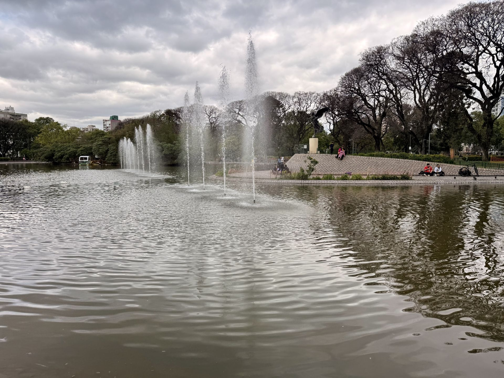
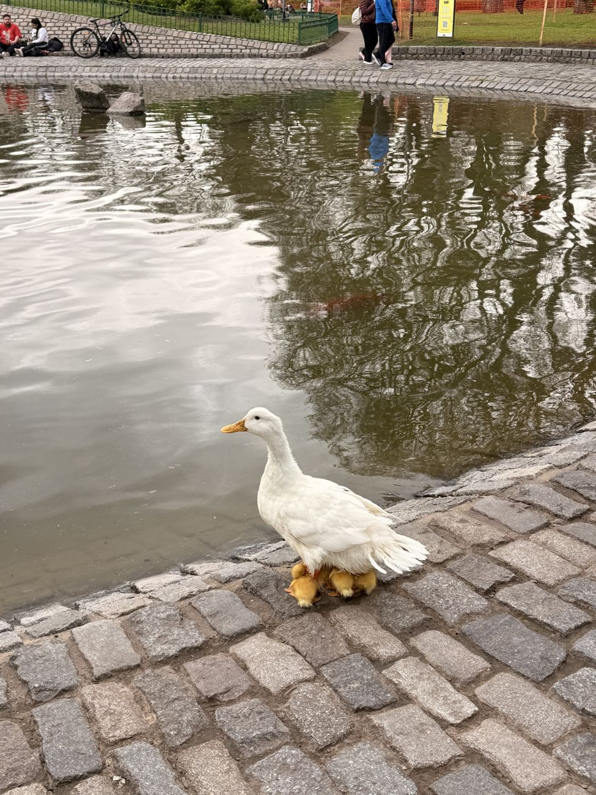
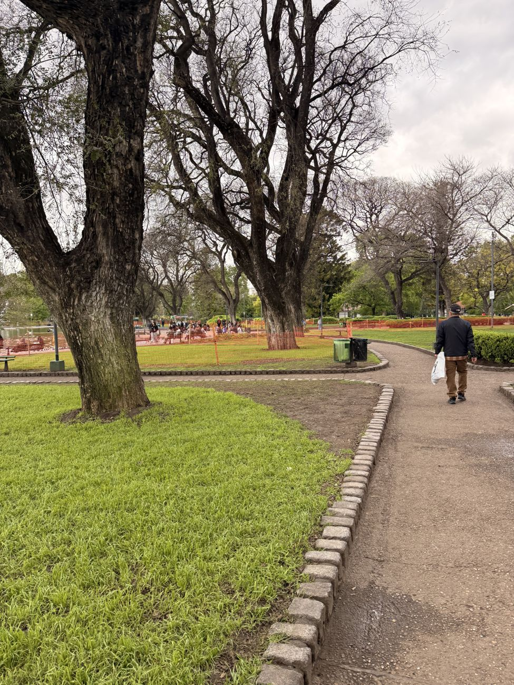
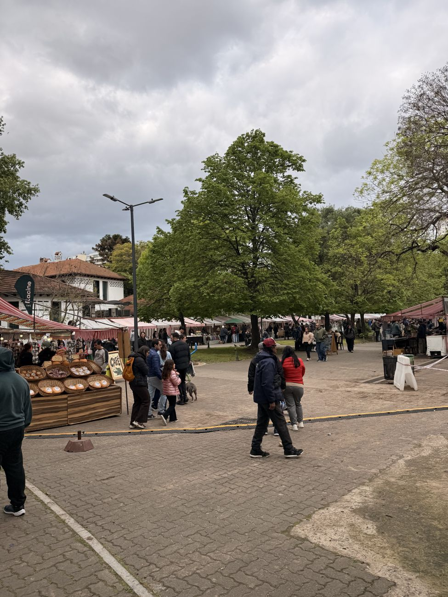
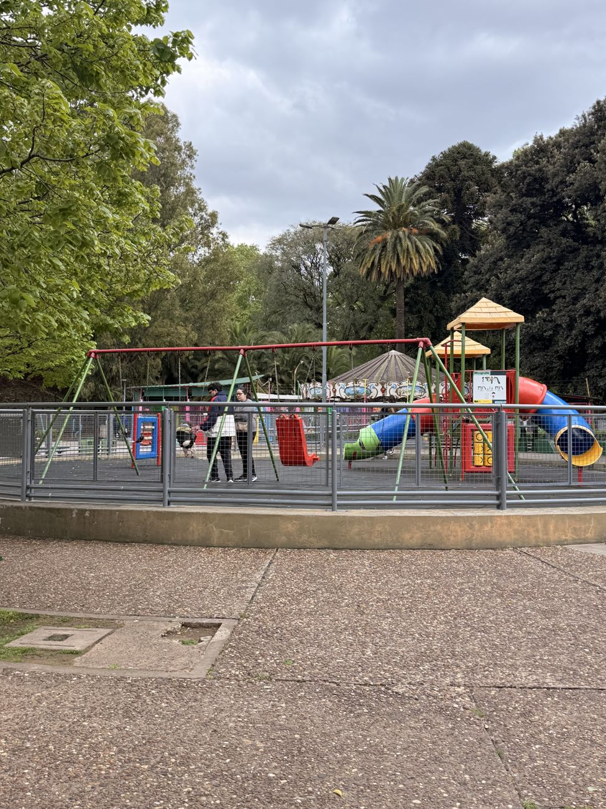
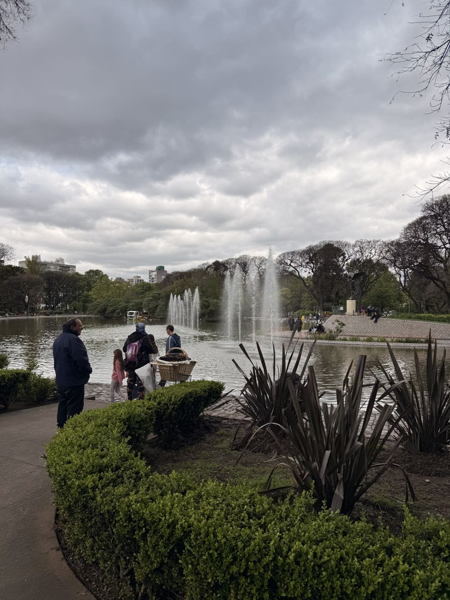
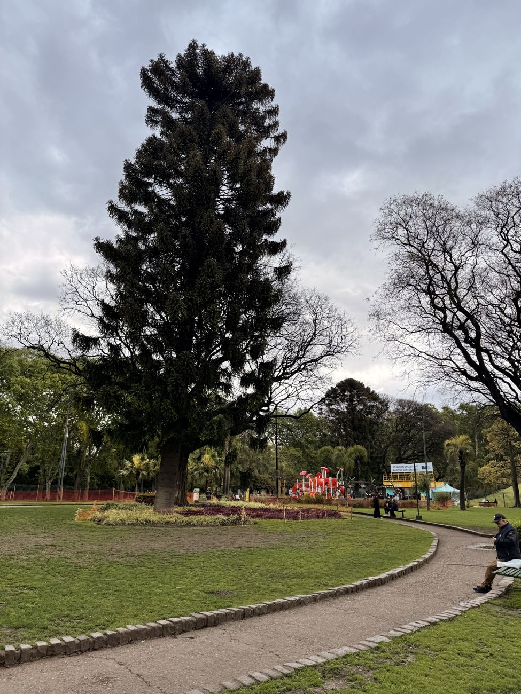
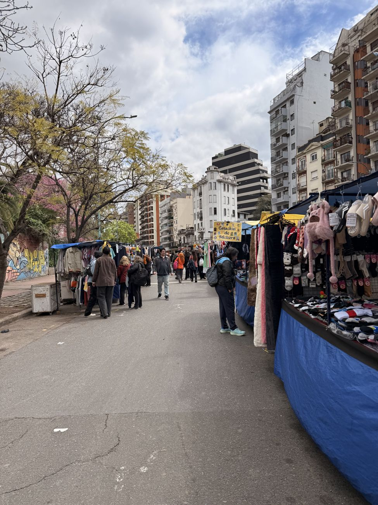
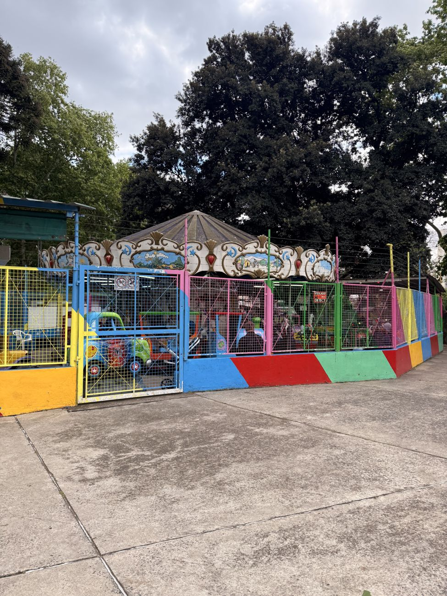
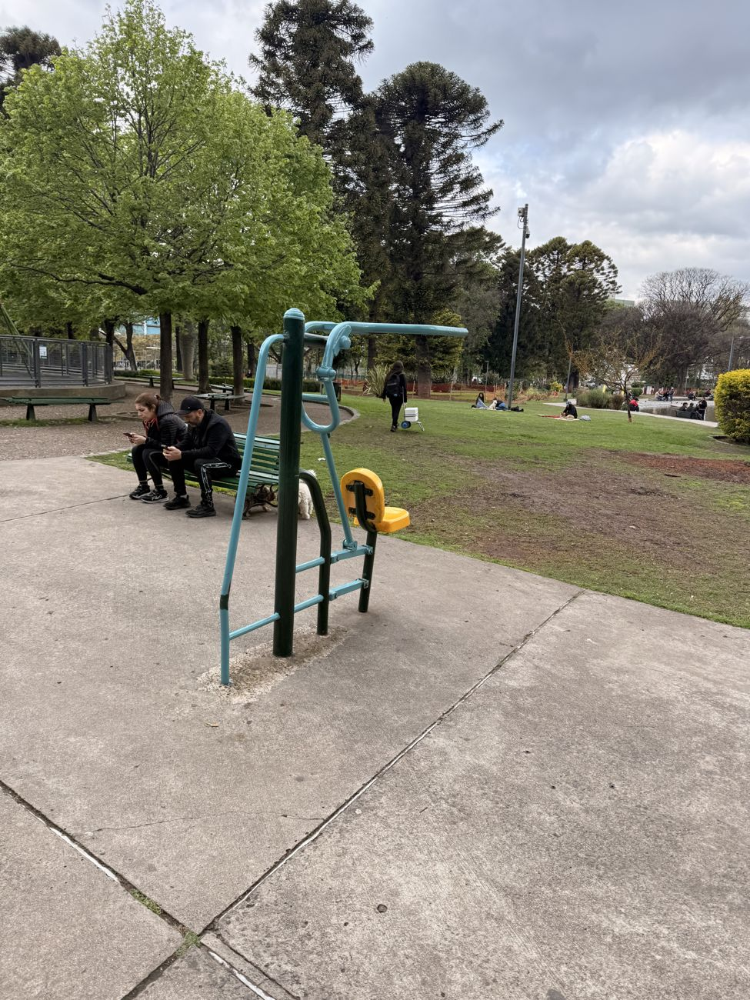

Parque Centenario
Un jardín histórico en el corazón de Caballito





Información general
- Ubicación: Av. Díaz Vélez 4859, Caballito, Ciudad de Buenos Aires.
- Horario general: todos los días, en general de 8:00 a 20:00 (puede variar según la época del año).
- Acceso: gratuito.
- Duración sugerida: 1 a 2 horas. Más tiempo si se visita el museo.
- Cómo llegar: subte línea B, estación Ángel Gallardo (unos 10 minutos a pie), o colectivos por Av. Díaz Vélez, Av. Ángel Gallardo y Av. Patricias Argentinas.
- Accesibilidad: espacio público al aire libre con senderos; algunos tramos tienen adoquines o piso irregular.
El Parque Centenario es uno de los principales espacios verdes de la Ciudad de Buenos Aires. Tiene unas 12 hectáreas y fue diseñado por el paisajista francés Carlos Thays para conmemorar el centenario de la Revolución de Mayo. Sus obras terminaron en 1920 y en 2012 fue reconocido como Jardín Histórico de la Ciudad.
Su lago central tiene fuentes y una isla donde anidan aves. Dentro del predio también están el Anfiteatro Eva Perón, el Museo Argentino de Ciencias Naturales "Bernardino Rivadavia" (de martes a domingo por la tarde) y el observatorio de la Asociación Amigos de la Astronomía, que hace visitas con telescopios los viernes y sábados al anochecer, con cielo despejado.
Recomendamos ir con tiempo, llevar mate, agua y protector solar, y visitarlo un fin de semana para aprovechar las ferias.
Actividades

Pasear por el lago
Caminar alrededor del lago, ver las fuentes y observar las aves de la isla central.

Recorrer los senderos
Caminar entre árboles y espacios verdes, o sentarse en el pasto a tomar mate.

Recorrer las ferias
Feria de artesanos y de libros usados. La de artesanos funciona los fines de semana y feriados de 10 a 20 h.

Juegos para chicos
Áreas de juegos infantiles y un carrusel, ideales para ir en familia.

Hacer deporte
Correr por el perímetro, usar las postas de ejercicio y el skate park.